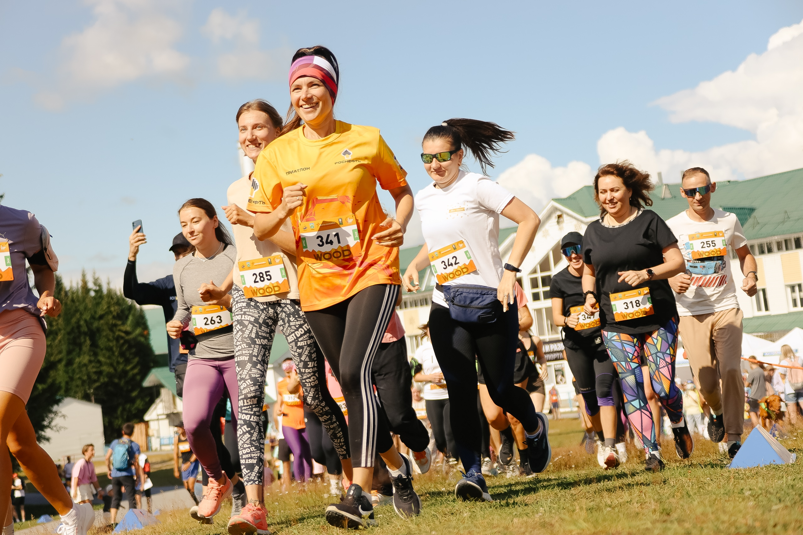
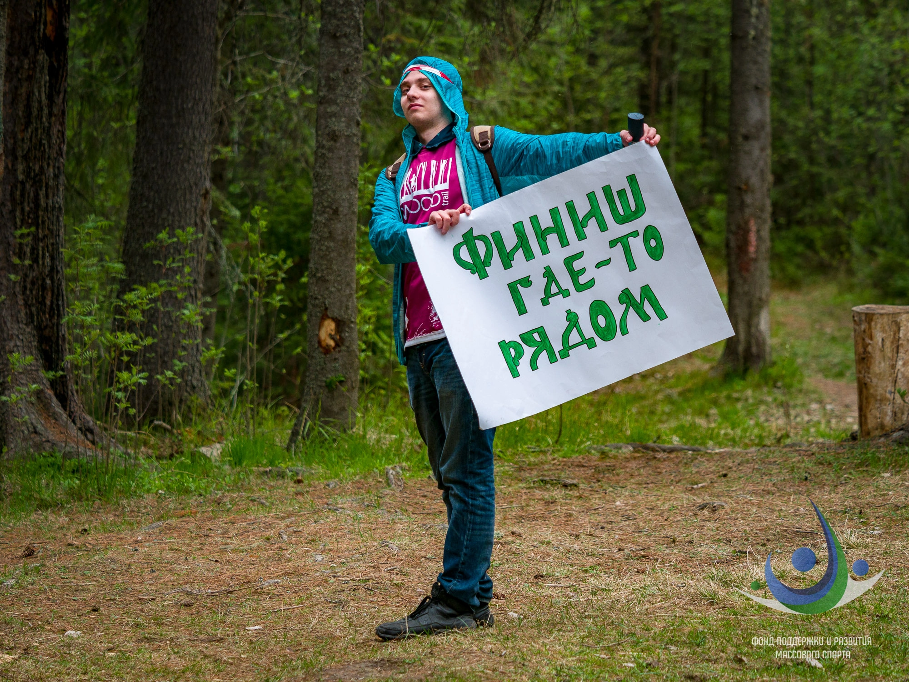

18 ИЮЛЯ
Просмотр трассы
Знакомимся с маршрутами: 10км, 3км, 1.5км и 700м.
Предпросмотр дизайна WOOD TRAIL
К содержимому
25 ИЮЛЯ 2027 · ХАНТЫ-МАНСИЙСК
Самаровский чугас · Долина ручьёв
Дистанции от 700 м до 30 км и эстафета
Всё началось с ВУДТРЕЙЛ. В 2017 году мы впервые вышли на эти тропы. В 2027-м наше сообщество отмечает десятилетие.

КОМАНДА СТАРТА
На трассе, в стартовом городке, рядом с участниками. За каждым тёплым стартом стоят люди.
Стать волонтёром
Скачайте GPX нужной дистанции. Для 30 км и эстафеты используется круг 10 км.
ОДИН ЛЕС. РАЗНЫЕ ПУТИ.
0–6 лет
Первый лесной старт для самых маленьких.
О дистанции7–12 лет
Больше тропы, больше движения.
О дистанцииОт 13 лет
Попробовать трейл и почувствовать его характер.
О дистанцииОт 18 лет
Полноценный маршрут по рельефу чугаса.
О дистанцииОт 18 лет
Тридцать километров на лесных тропах.
О дистанцииОт 18 лет · 3 участника
Три этапа. Одна команда.
О дистанции18 ИЮЛЯ
Знакомимся с маршрутами: 10км, 3км, 1.5км и 700м.
24 ИЮЛЯ
Встречаемся накануне старта. Детали — после утверждения программы.
ДОКУМЕНТЫ
Правила и условия участия в нашем мероприятии.
Скачать DOCX